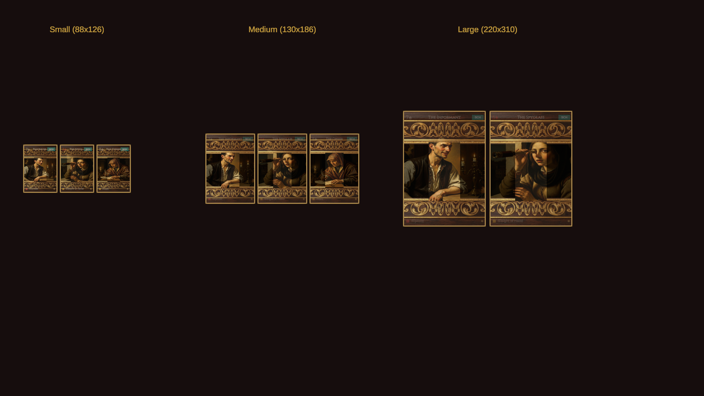

Framed Card Design Comparison
HTML Mockup vs Unity Implementation — Wits and Fools
HTML Mockup (Target)
Unity Implementation (with Frame Texture)

Structure Match Checklist
- Top Band — Dark background with rank/suit (left), card name (center), doctrine badge (right). Gold separator line at bottom edge.
- Art Window — Full-color card artwork fills the center between bands. Loaded from Resources/CardArt/ at runtime. 10 Schemer cards have generated Renaissance oil painting art.
- Bottom Band — Colored ability dot (left), ability name label, rarity pip glyph (right). Gold separator line at top edge.
- Rarity Borders — Common (brown #AA8855), Uncommon (blue-grey #AABBCC), Rare (gold #DDAA33 with thicker 3px border).
- Inner Gold Filigree — Subtle gold inner border, brighter for Rare cards.
- Size Scaling — Text sizes, dot sizes, band heights all scale correctly across 88x126 (deck browser), 130x186 (detail), and 220x310 (card reward).
- Dark Frame — Near-black card frame background (#0F0C08) instead of old cream (#F5F0E0).
- Light Text on Dark — Card name is parchment-colored, rank/suit uses red or dusty tan for dark-background visibility.
- Art Fills Naturally — Artwork covers the art window without grey overlay or transparency — vivid, full-color portraits framed by the dark bands.
- Gold Frame Texture Overlay — 9-sliced ornate gold frame (NanoBanana-generated dark mahogany + gold leaf scrollwork) rendered on top of card at all sizes. fillCenter=false so art shows through. pixelsPerUnitMultiplier scales border thickness per card size tier.
Frame Textures Generated
- card_frame_gold.png — Dark mahogany + gold leaf scrollwork (selected, integrated into Unity)
- card_frame_iron.png — Wrought iron gothic with shields and rivets
- card_frame_leather.png — Tooled leather with gold-stamped fleur-de-lis
- card_frame_top_band.png — Horizontal header strip
- card_frame_bottom_band.png — Horizontal footer strip with gold accent
Remaining Work
- Hover/Tap Ability Overlay — In the HTML mockup, hovering the art window slides up the ability description. In Unity, this would trigger on pointer enter/click.
- Remaining Card Art — Generate art for the other 89 cards (Brute, Trickster, Hoarder, Neutral), 28 relics, and 17 opponent portraits.
- Alternative Frame Styles — Iron and leather frames generated but not yet integrated as rarity-specific variants (e.g. iron for Common, leather for Uncommon, gold for Rare).